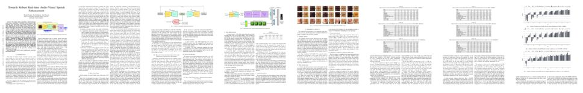
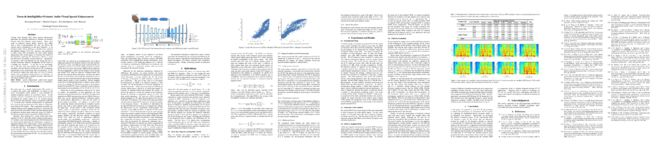
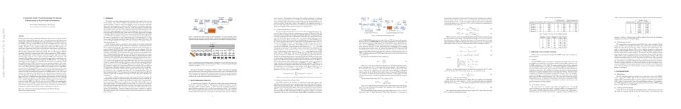
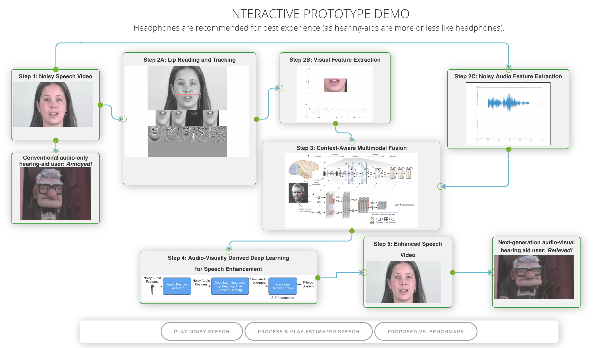

5G IoT enabled Hearing Aid Demo
In the demo, the left-hand side system act as hearing aid (HA) device, and the right-hand side system acts as a cloud for running speech enhancement algorithms. The channel between the hearing aid device to the access point is termed as an uplink channel and the channel between the access point and the HA device is termed as a downlink channel. Due to the real time nature of the information received at HA devices, the uplink channel supports varying data-rate and hence long-term evolution (LTE) based modified frame structure (The 5G-NR frame structure with 15 kHz subcarrier spacing is same as LTE frame structure) is developed for uplink data transmission. It supports 1.4 MHz and 3 MHz bandwidth with different modulation and code-rate for error correction codes. However, the cloud access point only transmits audio information to the HA device and hence supports a fixed data rate. Thus, again an LTE-based modified frame structure with 1.4 MHz bandwidth is developed for real-time speech enhancement.
5G-enabled contactless multi-user presence and activity detection for independent assisted living
Abstract: Wireless sensing is the state-of-the-art technique for next generation health activity monitoring. Smart homes and healthcare centres have a demand for multi-subject health activity monitoring to cater for future requirements. 5G-sensing coupled with deep learning models has enabled smart health monitoring systems, which have the potential to classify multiple activities based on variations in channel state information (CSI) of wireless signals. Proposed is the first 5G-enabled system operating at 3.75 GHz for multi-subject, in-home health activity monitoring, to the best of the authors’ knowledge. Classified are activities of daily life performed by up to 4 subjects, in 16 categories. The proposed system combines subject count and activities performed in different classes together, resulting in simultaneous identification of occupancy count and activities performed. The CSI amplitudes obtained from 51 subcarriers of the wireless signal are processed and combined to capture variations due to simultaneous multi-subject movements. A deep learning convolutional neural network is engineered and trained on the CSI data to differentiate multi-subject activities. The proposed system provides a high average accuracy of 91.25% for single subject movements and an overall high multi-class accuracy of 83% for 4 subjects and 16 classification categories. The proposed system can potentially fulfill the needs of future in-home health activity monitoring and is a viable alternative for monitoring public health and well being.
PDFDataTowards Robust Real-time Audio-Visual Speech Enhancement
Abstract: The human brain contextually exploits heterogeneous sensory information to efficiently perform cognitive tasks including vision and hearing. For example, during the cocktail party situation, the human auditory cortex contextually integrates audio-visual (AV) cues in order to better perceive speech. Recent studies have shown that AV speech enhancement (SE) models can significantly improve speech quality and intelligibility in very low signal to noise ratio (SNR) environments as compared to audio-only SE models. However, despite significant research in the area of AV SE, development of real-time processing models with low latency remains a formidable technical challenge. In this paper, we present a novel framework for low latency speaker-independent AV SE that can generalise on a range of visual and acoustic noises. In particular, a generative adversarial networks (GAN) is proposed to address the practical issue of visual imperfections in AV SE. In addition, we propose a deep neural network based real-time AV SE model that takes into account the cleaned visual speech output from GAN to deliver more robust SE. The proposed framework is evaluated on synthetic and real noisy AV corpora using objective speech quality and intelligibility metrics and subjective listing tests. Comparative simulation results show that our real time AV SE framework outperforms state-of-the-art SE approaches, including recent DNN based SE models.
PDFTowards Intelligibility-Oriented Audio-Visual Speech Enhancement
Abstract: Existing deep learning (DL) based speech enhancement approaches are generally optimised to minimise the distance between clean and enhanced speech features. These often result in improved speech quality however they suffer from a lack of generalisation and may not deliver the required speech intelligibility in real noisy situations. In an attempt to address these challenges, researchers have explored intelligibility-oriented (I-O) loss functions and integration of audio-visual (AV) information for more robust speech enhancement (SE). In this paper, we introduce DL based I-O SE algorithms exploiting AV information, which is a novel and previously unexplored research direction. Specifically, we present a fully convolutional AV SE model that uses a modified short-time objective intelligibility (STOI) metric as a training cost function. To the best of our knowledge, this is the first work that exploits the integration of AV modalities with an I-O based loss function for SE. Comparative experimental results demonstrate that our proposed I-O AV SE framework outperforms audio-only (AO) and AV models trained with conventional distance-based loss functions, in terms of standard objective evaluation measures when dealing with unseen speakers and noises.
PDFGitHubCochleaNet: A robust language-independent audio-visual model for real-time speech enhancement
Abstract: Noisy situations cause huge problems for the hearing-impaired, as hearing aids often make speech more audible but do not always restore intelligibility. In noisy settings, humans routinely exploit the audio-visual (AV) nature of speech to selectively suppress background noise and focus on the target speaker. In this paper, we present a novel language-, noise- and speaker-independent AV deep neural network (DNN) architecture, termed CochleaNet, for causal or real-time speech enhancement (SE). The model jointly exploits noisy acoustic cues and noise robust visual cues to focus on the desired speaker and improve speech intelligibility. The proposed SE framework is evaluated using a first of its kind AV binaural speech corpus, ASPIRE, recorded in real noisy environments, including cafeteria and restaurant settings. We demonstrate superior performance of our approach in terms of both objective measures and subjective listening tests, over state-of-the-art SE approaches, including recent DNN based SE models. In addition, our work challenges a popular belief that scarcity of a multi-lingual, large vocabulary AV corpus and a wide variety of noises is a major bottleneck to build robust language, speaker and noise-independent SE systems. We show that a model trained on a synthetic mixture of the benchmark GRID corpus (with 33 speakers and a small English vocabulary) and CHiME 3 noises (comprising bus, pedestrian, cafeteria, and street noises) can generalise well, not only on large vocabulary corpora with a wide variety of speakers and noises, but also on completely unrelated languages such as Mandarin.
PDFDOIASPIRE CorpusContextual deep learning-based audio-visual switching for speech enhancement in real-world environments
Abstract: Human speech processing is inherently multi-modal, where visual cues (e.g. lip movements) can help better understand speech in noise. Our recent work [1] has shown that lip-reading driven, audio-visual (AV) speech enhancement can significantly outperform benchmark audio-only approaches at low signal-to-noise ratios (SNRs). However, consistent with our cognitive hypothesis, visual cues were found to be relatively less effective for speech enhancement at high SNRs, or low levels of background noise, where audio-only (A-only) cues worked adequately. Therefore, a more cognitively-inspired, context-aware AV approach is required, that contextually utilises both visual and noisy audio features, and thus more effectively accounts for different noisy conditions. In this paper, we introduce a novel context-aware AV speech enhancement framework that contextually exploits AV cues with respect to different operating conditions, in order to estimate clean audio, without requiring any prior SNR estimation. In particular, an AV switching module is developed by integrating a convolutional neural network (CNN) and long-short-term memory (LSTM) network, that learns to contextually switch between visualonly (V-only), A-only and both AV cues at low, high and moderate SNR levels, respectively. For testing, the estimated clean audio features are utilised using an innovative, enhanced visually-derived Wiener filter (EVWF) for noisy speech filtering. The context-aware AV speech enhancement framework is evaluated in dynamic real-world scenarios (including cafe, street, bus, and pedestrians) at different SNR levels (ranging from low to high SNRs), using benchmark Grid and ChiME3 corpora. For objective testing, perceptual evaluation of speech quality (PESQ) is used to evaluate the quality of the restored speech. For subjective testing, the standard mean-opinion-score (MOS) method is used. Comparative experimental results show the superior performance of our proposed context-aware AV approach, over A-only, V-only, spectral subtraction (SS), and log-minimum mean square error (LMMSE) based speech enhancement methods, at both low and high SNRs. The preliminary findings demonstrate the capability of our novel approach to deal with spectro-temporal variations in real-world noisy environments, by contextually exploiting the complementary strengths of audio and visual cues. In conclusion, our contextual deep learning-driven AV framework is posited as a benchmark resource for the multi-modal speech processing and machine learning communities.
PDFDOICogAVHearing Lip-Reading Driven AV Speech Enhancement Demo
This preliminary interactive Demo is aimed at demonstrating the potential of "context-aware" audio-visual hearing aids, based on Big Data Deep Learning technology. The demo has been developed by feeding randomly selected, real noisy speech videos from YouTube, into the audio-visual speech enhancement system.
Demo Link